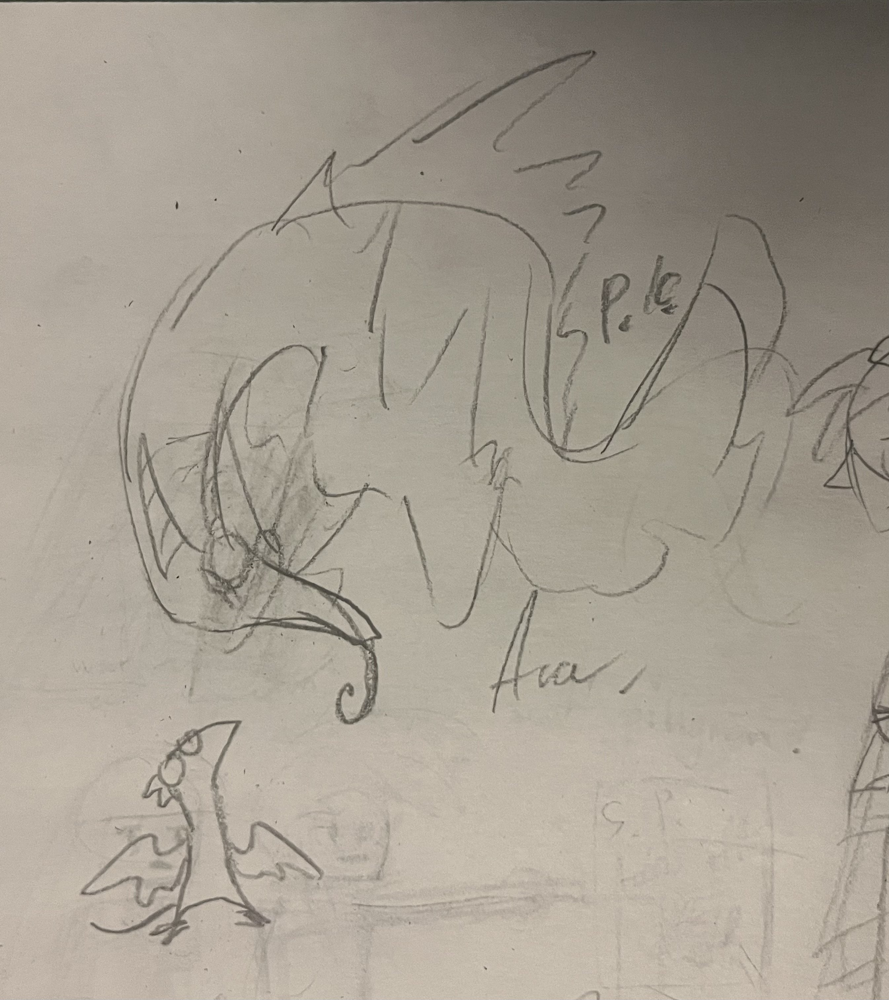
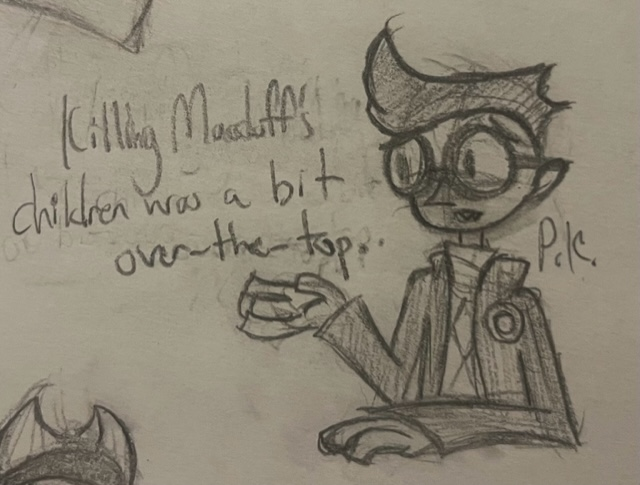
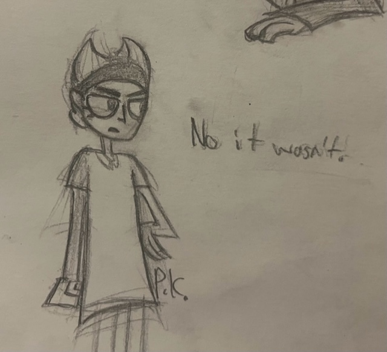

MARCH 2022-JUNE 2024 ART
Urusei Yatsura is pretty tight.
I love the super-clean manga artwork (reminds me of Daniel Clowes' work a little bit) and colourful semi-retrofuturistic aesthetics and implied post-first-contact aliens-just-live-here-now backdrop and the use of halftone and neon colour in the remake (even if like 80% of the jokes don't land because the timing's off) and the whacked-out character dynamics that ever-so-slowly shift over the course of dozens of chapters until you get to the end and you're just like, yeah they totally belong together, when's the (second, legally-binding) wedding. Shit's cute as hell.
Here are some assorted doodles; in reverse order, Rei in his tiger-ox-hippo-werewolf form, Ran (she is an icon and she is the moment, everything surrounding her is hysterical to me, I think because I've known one too many two-faced super-cutesy fashion-focused girls in real life), and of course Ataru and Lum (the ORIGINAL Man with Genuinely No Redeeming Qualities x Slightly Assholeish Girl with Colourful Hair pairing, Scott Pilgrim owes everything to these two freaks.)
Also also it is Ataru's birthday today. I love fictional character birthdays man. They should all have one.
It's a fairly typical unicorn. Inspired loosely by the Black Keys song.
I was sitting on this sketch since, like, before Christmas, so I wanted to gett'er done before moving on to do the new web graphics. Overall I think it turned out pretty good! The linework is my favourite I've ever done.
Unfortunately this is probably the last piece I'll do with Affinity 'cause they got bought out by some other company and are probably gonna switch to subscription bullshit soon. I've been trying to learn Clip Studio Paint and it's honestly wayyy better for how I work, loving it so far.
My wish for a Monsterverse Anguirus came true!!...Kind of. I mean, they gave it a weird turtle face and ice powers and a new name but it's still a big nasty ankylosaurus monster who's Godzilla's original nemesis and later new pal, and that's pretty much the core Anguirus traits.
Godzilla X Kong was really, really dumb and I really, really enjoyed it. King Kong swings around a baby monkey like a nunchuk and Godzilla suplexes him into one of the Great Pyramids and also Mothra is there, for like five minutes of screen-time, non-consecutively, so it was pretty much a good time I think.
Early versions of this dumbass movie's script apparently had a backup monster for if they couldn't get the rights to Mothra again called Phosphera who just looked like a generic bird-man from what we can all tell and could you imagine how lame that would be?? I would be so pissed if I was watching a Godzilla movie and someone's basic bitch fursona (feathersona?) showed up, like I almost can't imagine anything lamer. (Oh wait I can it'd be the Roland Emmerich movie.) But luckily they shelled out for the funny bug and we don't have to contemplate that reality. Thank goodness.
Makoto Yuki or... whatever you want his name to be, from Persona 3.
I love this game so far. Snappy combat, endearing characters, all sortsa fun side-features, and my god the music. The music! You think people who don't shut up about the Persona soundtracks are just really big fans of the games but no this is the best non-licensed game soundtrack I think I've ever heard (other than Guilty Gear stuff maybe, but even then...)
Like if this was all just from some random independent band I would still listen to it, that's how good it is. I don't know if I like it so much 'cuz it's a good game or 'cuz it's an excuse to sit there at my desk listening to the Persona 3 Reload soundtrack. Best hundred dollars I've spent in a while.
(And are non-indie video games really costing 100 bucks a piece now? Jeez.)
(If I was still using Instagram I'd have to attach like three content warning slides on this so the auto-skip it does on feed refresh wouldn't jumpscare some poor fucker who can't take the sight of a gun. Sorry, not a gun, it's an evoker, totally different thing, it symbolizes ego death guys it's not just edgy for no reaso)
A mod kid I doodled a while back.
I wanna get more into mod fashion but it doesn't really gel with my love for bright colors and current wardrobe. Maybe I should take a page outta Tank Girl's book n' just blend it with my current punk styles.
This guy is technically a character from something but for your sake and mine let's pretend he's not. If you somehow recognize him... no you don't <3
An angel chick with a birdie friend.
I've had pin-up girls on the brain lately and I think most of society's problems would be solved if we all drew more of them. That plus popularizing bidets would fix America I think.

Loose doodles of some alien critters for a collaborative art project I'm involved with. It involves magical girls and a sci-fi setting and that's all I'm allowed to say. Maybe one day it'll be done, maybe not...
A little drawing of Luna from Sailor Moon. This show is super-cute! I see why it has the following it does.
I'm really in love with how this came out--I think I sorta nailed the midcentury-modern look I was going for.
Something cutesy and formal, Mizna Wada-esque maybe, for Godzilla Minus One which I saw yesterday.
Fucking incredible film--if you're into kaiju or big action blockbusters at all you have to see this one on the big screen. Particularly strong in it's pacing, sound-design, and themes. Plus I'm just happy we finally have a more traditional-looking CG Godzilla.
Violent and desolate and incredibly schmaltzy--what more could you want?
A warrior-priestess velociraptor. She appeared in a dream I had about a fighting game which does not exist. Apparently there is a playable velociraptor in Killer Instinct, though, so that's cool.
Some pets and their related objects. Might make a good basis for a tiling wallpaper.
"In my thoughts, I use the technique of positive visualization. How come I always feel undermined?"
Christopher from the Sopranos. My favourite evil Italian man.
(Sir) Percedal (of Sadlygrove) from Wakfu.
Same friend who got me to watch Precure got me to watch this show and I'm digging it so far. Pretty fun characters, a wicked artstyle, and while it's got a budget consisting of 5 dollars and a can of Pepsi there's a real effort to make a dynamic action-adventure cartoon that's really admirable. I like this silly knight guy a whole lot. No thoughts in his head.
Also I may or may not have put an embarrasing amount of time into the tie-in video-game over the last couple weeks. Nobody check my Steam playtime please.
This is a very similar pose to the Edred drawing I did back in Spring but much improved in terms of detail and nuance I think. Feel like I haven't seen any real improvement in my traditional art for a while and while I'm not too concerned about that since I just do it for fun it's still nice to see proof that I'm getting somewhere.
A mysterious alien creature of some sort... once she was a beautiful mermaid-esque creature, but a terrible event in her past lead her to take on a more mournful form, and the peoples of the planet she inhabits view her as a kelpie-like monster. Or something.
I am so so SO obsessed with my own lineart on this one. God it looks GOOD. Sorry to toot my own horn but this is my website and I'm in charge here and I say it's totally rad and so it is.

These are characters from a 1970 Barbie commercial that popped up in my YouTube recommendeds. They're very cute. Probably my second-favourite piece of Barbie-related media I've seen this year.
Also, the title of that promotion is pretty funny. To quote myself from a while ago;

A badge commissioned for use in this Flight Rising player challenge (by someone on another site.) I used to play FR way back in early middle school... haven't touched it much since. Mirrors are pretty cool-looking dragons, I guess.
Penelope Jane Peryton is the valedictorian of her folkloric-creature high school class. She is involved in the radio and yearbook clubs and hopes to pursue a career in finances in the future.
In other words, an attempt at analog effects in Affinity Designer. Not sure how successful I was but I like the character herself well enough. Maybe I'll draw her again sometime.
The Barbie movie kicked ass. Everyone and their cat has said that already but it's true. I like the movie but I liked getting dressed up for it even more; Badgersaurus here is in my real-world outfit I wore to see it!
I gotta find more excuses to wear my kitty cardigan.
An invite I drew for my birthday this year, featuring a Quickdraw Mcgraw-esque Badgersaurus.
Another piece of UWE fanart; a drawing of the Lady Fox (or June Way) done in Affinity Designer. I went for a sort-of midcentury marketing-print look.
Man, do I love this design!! Hope she shows up again sometime in these last three episodes.
Episode 7 had me losing my marbles. I mean, the whole show does. But especially that episode.
Ashes-to-ashes,
Dust-to-dust,
Beat everybody-but you won't beat us!
Another digital piece done in Inkscape, inspired by the Black Keys song 'Your Team Is Looking Good'. Pretty spiffy, I think, though the software isn't super-suited to textures or curved text or anything fun, really.
Some toucans enjoying a milkshake together.
A really simple piece-it is my first bit of digital art since I finished this website's graphics, actually, so I wanted to do something plain. It's loosely inspired by the Cibo Matto song Spoon.



Some stupid late-night doodles of Mandy and Nergal Jr. from the Grim Adventures of Billy and Mandy, based off this image, because we've just finished our Macbeth unit in English and all I could think of while taking notes was this. I had to get it out of my system.
{kind=link}
Melinda/Emma (Emmalinda? Emmaline? Darling I love you, but I can't just keep livin' on dreams no more...) from Unicorn: Warriors Eternal.
Did I mention I like this show? Because I really, really like this show.
Edred from the excellent Unicorn: Warriors Eternal.
I have had this show for three days and it is already blowing my mind. I have not been this in love with a piece of media for ages. I love all four main characters so, so much.
But especially Edred. He is making me lose it. I don't know why.
The pose here is pretty stiff but rest assured this is not the only time I will draw fanart for this show.
I'm a little bit rusty with drawing human people, I think.
A pangolin.
Ages ago I remember this being one of the animals I wanted to draw to get back into drawing stuff for fun but I could never get it right. Now I can! Woohoo.
A robot dinosaur from beyond the stars!
Today marks one full year since Badgersaurus hit the web! Here's a celebratory drawing.
That cake is one of those really rich chocolate ones. Like the kind my grandma makes.
Another of my many Splatoon OCs. This guy is an ambulance-chaser dogfish (you know, 'cause sharks can smell blood from miles away) whose legal practice isn't going as well as he'd hoped. He's kinda like Saul Goodman if Saul Goodman was a future-evolved fish living after the human race drove itself extinct through climate change.
Side Order looks craaazy. I can't wait!
A wolf in sheep's clothing. Literally.

A dragon hangin' out in a tree.
A valkyrie or harpy or swan-maiden (you know, like selkie stories?) or some other bird-woman hybrid.
Lately, I've been reading a lot of fairy-tale stuff. Old fairy-tales, new original ones (like 'Catskin' by Kelly Link or 'The Ash-Girl and the Salmon Prince' by P.H. Lee), retellings, that kinda stuff. I think the way certain elements appear in them over and over, across time, space and different cultures, is really interesting.
A coyote lady.
I guess she's a cashier or secretary or accountant or something.
She looks pretty pissed off. I wonder why.
A flamingo.
They were one of my favourite animals as a kid.
A doodle of the new pokemon, Quaxly.
Consider this a triple-celebratory drawing: for the new Pokemon games out next week, for the Pokemon splatfest this weekend (go team water!) and for my finally beating Pokemon Shield just a few moments ago.
A wonderful game, honestly. Did not deserve the bum rap it got. So many cool new pokemon, so many interesting and well-designed trainers, and a totally-rad central motif of modern commercialization against ancient castles, legends and well-trodden roads. I really did dig it.
It took me so long to finish it 'cause I bought it right before slipping into a really bad depression and then I played a buncha other stuff and only came back to it a few months ago. But I'm glad I did!
See you all in Paldea soon!
A small doodle of Billy from the Grim Adventures of Billy and Mandy.
I like to watch a handful of episodes of this show around Halloween. A lot about it appeals to me: the cynical, absurd humour, the vaguely midcentury setting and art, the inherently-funny character dynamics, the sheer breadth of pop-culture reference (what other cartoons can you think of that have God-Emperor of Dune parody episodes?) It's pretty good stuff.
Happy (Canadian) Thanksgiving! Here is a cockatrice for the occasion.
Another Splatoon character. This is Guppy! She's Bream's best mate and partner-in-crime.
They met while working a Salmon Run shift, ages ago. Guppy is more down-to-earth than Bream but she's not the sharpest tool in the shed. She collects designer vinyl toys. She is also totally obsessed with Clam Blitz for some reason.
This is her Splatoon 2 outfit: Pilot Goggles, Zekko Hoodie, and (out-of-frame) Gold Hi-Horses. I'm giving her a fancy new outfit for the fancy new game; so far it's the Street-Style Cap, Annaki Blue Cuff and Red 3-Straps, though I'm not sure about the shoes.
(Bream's outfit is staying similar with a Hawaiian shirt and round glasses but I'm not sure on specifics yet. She does have a popmpadour now, though. I will draw her again sometime soon.)
Quick doodle of Frye from Splatoon 3. Getting used to drawing Deep Cut but I'm not happy with my drawings of Shiver or Big Man yet.
I like this game a lot.
Splatoon 3 is out!! I have been playing a lot of it. In fact, I have done nothing (with my free time) but play Splatoon 3 for three days.
Okay, maybe that's an exaggeration. But I HAVE spent a lotta time on it. Salmon Run is as fun (and depressing) as ever, turf-wars are still nonstop action, Tower Control still pisses me off, and the story mode is a total trip from what I've played so far.
It's inspired me to break out some old Splatoon OCs I haven't drawn in ages. The salmonid here is named Kilgore (after the recurring Kurt Vonnegut character, Kilgore Trout) and his lamprey girlfriend is named Polly. He's an aspiring science-fiction author, but the current migratory status of his people (and, you know, the fact that they're being killed en-masse by teenagers with part-time jobs) is making this a bit difficult for him. Polly mooches off both his blood and his money. Sometimes I draw him with a hat, but not this time.
I first came up with this girl in 2018 and she STILL doesn't have a name. Sigh.
Anyway, she's a leafy-seadragon who was a famous actress. Key word 'was'. She's totally washed-up now. The average inkling would absolutely not be able to tell you her name, even if you told them about her two seconds ago. The opposite of fresh.
She has a belaboured assistant who I've never drawn and can't decide on a species for. But he does exist, in my brain somewhere.
I'll probably draw the rest of my fan-characters of these games soon. Guppy (my main inkling) in particular I need to get around to. Stay tuned!
"The Cheat!
Where you goin' to?
And when you get there, whatchu think you gonna do?"
An interpretation of The Cheat from Homestar Runner as a sort-of bird.. rat... meerkat.. thing.
I dunno, I just got the urge to draw him.
Also that song really reminds me of Little Birdie by Ween. The voice, the instrumentation, the whole shebang.
Loose doodle inspired by the Black Keys song Wild Child off their latest album.
It sounded even better live.
Tied with For the Love of Money for my favourite off Dropout Boogie.
A deer faun. Not much to say here.
Doodle of Lenore from the Roman Dirge comics.
I love these comics and their art so much. They're ridiculously funny, in a weird visceral way. Can something be viscerally funny? I don't know.
You can read the collected issues of the 90's comics on the Internet Archive if you'd like.
"Beneath the bebop moon/I wanna croon/With you.."
A hippie-werewolf of some sort howls at the moon.
Inspired by the T. Rex song Mambo Sun 'cause I've been listening to them a lot lately. I wanna do more music-inspired drawings like this.
Badgersaurus chillin' on the sea-shore.
Consider this a THANK YOU for 3000 views. Holy shit that's a big number.
I can't wait to get even more stuff on the site this summer. I'm talking zines, Pokemon lore theories I've been thinking on since I was ten, video-game ideas, a REAL favicon, the works.
I'm still totally busy with school right now but I'll be done soon and then I can really get going.
Messy doodles of Anguirus, my all-time favourite kaiju. Okay that's a lie he shares that spot with like six other monsters but he's still pretty cool.
I recently finished watching Godzilla Singular Point and it was... not good, but very entertaining. I only wish the last fight with Godzilla lasted a little longer and maybe that the plot was a little less convoluted by the last three episodes or so.
But hey, it's a kaiju anime, I'm not exactly expecting world-changing literature here.
Doodle of one of my Splatoon characters, Bream, an octoling who runs get-rich-quick schemes with her buddy Guppy. She's an arrogant, egotistical sort-of person who thinks she's far better at things than she actually is. She wears the worst Hawaiian shirts and thinks they are the peak of fashion. Her plans never pan out, so she spends much of her time working shifts at GrizzCo.
I'm very excited for Splatoon 3!
Aero Beast Jettrax.
A kaiju who flies not with wingbeats, but with built-in jets. He is rarely seen on land at all; when he does rest, he prefers high mountain peaks, for quick cooling. He shares some DNA with the ancient amphibian Diplocaulus.
He is rarely seen by humans and his relationship with them is not yet known.
I kinda wanna do an adoptables page, with little drawings of kaiju like this you can put on your site.

Quick and messy character doodles for a comic I may or may not make.
It's about ancient animal gods adjusting to 21st-century humanity. Or something. These guys are the God of Herbivores and God of Carnivores (first image) and a trickster-god figure responsible for all kinds of weird creatures, like platypuses and flightless birds.
If I decide to work on it more I'll write it up for the More Art section. It might be a while 'til they're up there though, since I've got other projects I wanna write about first.
A Gallimimus with a saddle.
I've been obsessed with the idea of dinosaur cowboys lately: riding their speedy bird-lizard steeds into the sunset, singing trail songs, chasing Triceratops cattle... Sounds like fun.
Sketches of Lammy and Katy Kat from the Parappa series.
Love these games, especially for their art. Rodney Greenblat's a big inspiration to me for sure.
Black-Billed Magpie.
The most commmon bird where I live but arguably the most entertaining. They're such jerks. I love them.
Raz Aquato from Psychonauts, the best video game ever made (at least according to me.) This sketch is a little loose but whatever. I'm pretty happy with it anyways.